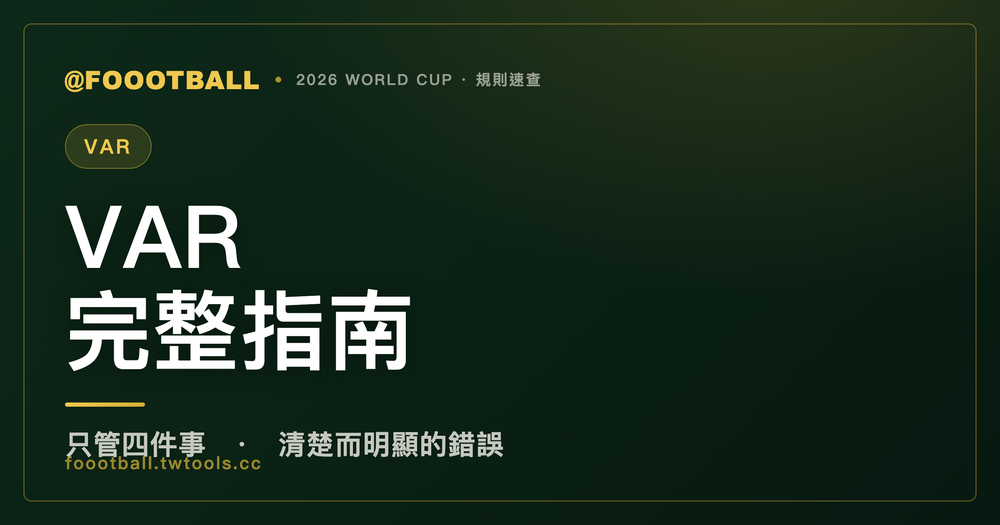

VAR 是什麼、什麼時候才會介入？世界盃影像輔助判決完整指南
VAR（影像輔助裁判）不是重看每一個判罰，它主要負責幾類情況：進球、罰球（點球）、紅牌、以及認錯人（2026 起也含明顯錯誤的第二黃導致紅牌）。而且只在裁判出現『清楚而明顯的錯誤』或漏掉重大事件時才介入。VAR 只給建議，走到場邊螢幕複審、做出最終決定的，永遠是主裁判本人。

每屆世界盃，VAR 都是吵最兇的話題之一。一部分原因是大家對「它到底管什麼、什麼時候該出手」其實不太清楚——看到爭議判罰沒被改判就罵 VAR 失職，但很多情況本來就不在 VAR 的職權範圍內。這篇把 VAR 的邊界、流程，以及 2026 年的技術升級講清楚。
VAR 主要管哪幾件事
VAR（Video Assistant Referee，影像輔助裁判）不是用來重看比賽裡每一個判罰的。依 IFAB 規則，它的職權集中在幾類「改變比賽走向」的關鍵情況——傳統上是下面四類，2026 年起再小幅擴充（詳見下文）：
| VAR 可介入的四類情況 | 說明 |
|---|---|
| 進球 / 不算進球 | 含進球前的進攻過程是否有犯規、越位、球出界等 |
| 罰球（點球）/ 不判罰球 | 該不該判點球，或誤判了點球 |
| 紅牌 | 直接紅牌；2026 起也含「清楚錯誤的第二張黃牌導致紅牌」 |
| 認錯球員 | 裁判出牌時把牌給錯了人 |
換句話說，一般的黃牌、界外球、犯規地點這些，就算判錯，VAR 原則上也不會介入——它不是萬能的覆核機器，而是只盯住會決定勝負的關鍵環節。這也是為什麼有些看起來很冤的判罰，VAR 「見死不救」：因為那根本不在它能管的範圍。
要補充的是：2026 年這屆起，IFAB 把 VAR 的職權做了小幅擴充——除了原本的四類，明顯錯誤的「第二張黃牌導致紅牌」也可被複審；部分賽事還可即時改正明顯誤判的角球。但核心精神不變：VAR 只處理少數重大、且「清楚而明顯」的錯誤。
什麼時候才會出手：清楚而明顯的錯誤
就算落在這四類裡，VAR 也不是「有疑慮就改判」。它的介入門檻是兩種：
- 清楚而明顯的錯誤（clear and obvious error）：判罰明顯錯了，不是見仁見智的灰色地帶
- 漏掉的重大事件（serious missed incident）：場上裁判完全沒看到的嚴重情況
關鍵在「清楚而明顯」這五個字。如果一個判罰是模稜兩可、不同人會有不同看法的，VAR 原則上不推翻場上裁判的判斷——它尊重主裁的現場決定，只在「錯得很明顯」時才出手。這條設計是刻意的：避免每個小爭議都要重看、把比賽切得支離破碎。
流程：VAR 給建議，主裁做決定
很多人以為 VAR 是「樓上那群人說了算」，其實不是。標準流程是：
- 靜默檢查：每一個進球、點球、紅牌情況，VAR 都會在後台默默核對，不打斷比賽
- 提醒主裁：若發現可能有「清楚而明顯的錯誤」，VAR 透過耳機建議主裁
- 場邊複審（OFR）：主裁可以親自走到場邊的螢幕（pitchside monitor）重看畫面，這個動作叫 On-Field Review
- 最終拍板：看完之後，做最終決定的永遠是主裁判本人，不是 VAR
記住這句話：VAR 只提供資訊與建議，主裁才是最終決定者。 這是整套制度的核心原則，也是為什麼有時 VAR 提醒了、主裁看了螢幕、最後仍維持原判——那是主裁的權力。
2026 的升級：半自動越位，更快了
2026 年世界盃在判罰科技上有明顯升級，最重要的是半自動越位技術（Semi-Automated Offside Technology, SAOT）的進化：
- 直接通知場上裁判：2022 卡達世界盃時，越位資訊是先送給 VAR、再轉達場上。2026 改成清楚的越位直接送到場上助理裁判的耳機，省掉中間一層，判罰更快。
- 明確越位即時提示：系統偵測到清楚的越位情況時，會直接對裁判耳機發出提示，不必等人工慢慢畫線。
- 更快的越位判決：搭配球內感測等技術，縮短了過去那種「等好幾分鐘畫線」的延遲。
此外，這屆也導入了裁判視角攝影（referee body camera）等設備。要誠實提醒一句：目前公開資訊中，body cam 較偏向轉播與賽事分析用途，其能否、以及如何被用於判罰本身，不適合過度推論——真正改變判罰速度的，是上面講的半自動越位升級。
一句話總結
VAR 主要管「進球、點球、紅牌、認錯人」這幾件事，且只在「清楚而明顯的錯誤」時介入（2026 起也含明顯錯誤的第二黃導致紅牌）；它給建議、主裁做最終決定。2026 的最大升級是半自動越位技術直接通知場上裁判，判罰更快。
常見問題
VAR 可以用在哪些判罰上？
核心是四類：進球（含進球前的進攻過程）、罰球（點球）、紅牌、認錯球員。2026 年起再小幅擴充：明顯錯誤的第二黃導致紅牌可複審，部分賽事也可即時改正明顯誤判的角球。至於一般黃牌、界外球、犯規地點等，仍不在 VAR 職權內。
為什麼有些明顯的爭議判罰，VAR 沒有改判？
兩個可能：一是該判罰不屬於 VAR 能管的四類情況；二是雖然屬於四類，但判罰屬於見仁見智的灰色地帶，沒到「清楚而明顯的錯誤」的門檻。VAR 只在錯得很明顯時才出手，不推翻模稜兩可的判斷。
VAR 是不是樓上的人說了算？
不是。VAR 只負責檢查並提供建議，主裁可以親自到場邊螢幕複審（On-Field Review），最終決定權永遠在主裁判本人手上。
2026 世界盃的越位判決有什麼不一樣？
採用升級版的半自動越位技術（SAOT）。和 2022 不同，清楚的越位會直接送到場上助理裁判的耳機（過去是先經 VAR 再轉達），判罰比過去快很多。
兩黃累計的紅牌，VAR 會看嗎？
要分兩種情況。2026 年起，如果裁判已經出示了第二張黃牌、導致球員被罰下，而這張第二黃屬於「清楚而明顯的錯誤」，VAR 可以建議複審、撤銷這張紅牌；但如果裁判只是漏掉一個可能構成第二黃的犯規，VAR 不會為了「補一張第二黃」而介入。簡單說：可以糾正錯給的第二黃，不能補發漏掉的第二黃。
資料來源：IFAB 足球規則（Laws of the Game）VAR 議定書、FIFA 2026 World Cup 判罰科技說明。本站為非官方球迷資訊整理。延伸閱讀：越位規則圖解。